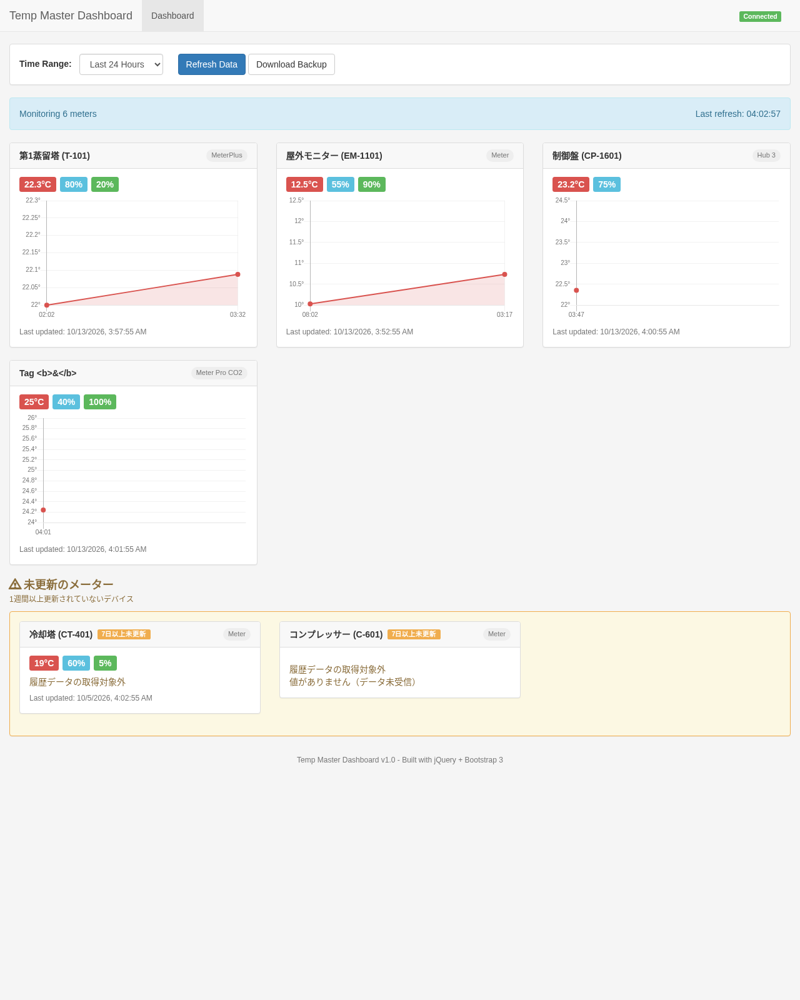
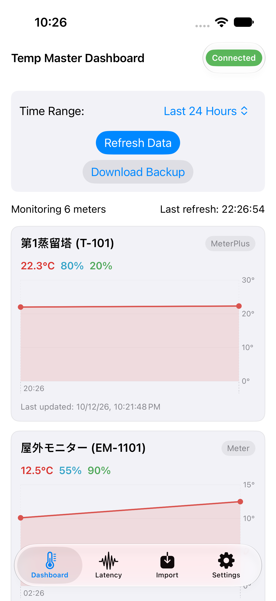
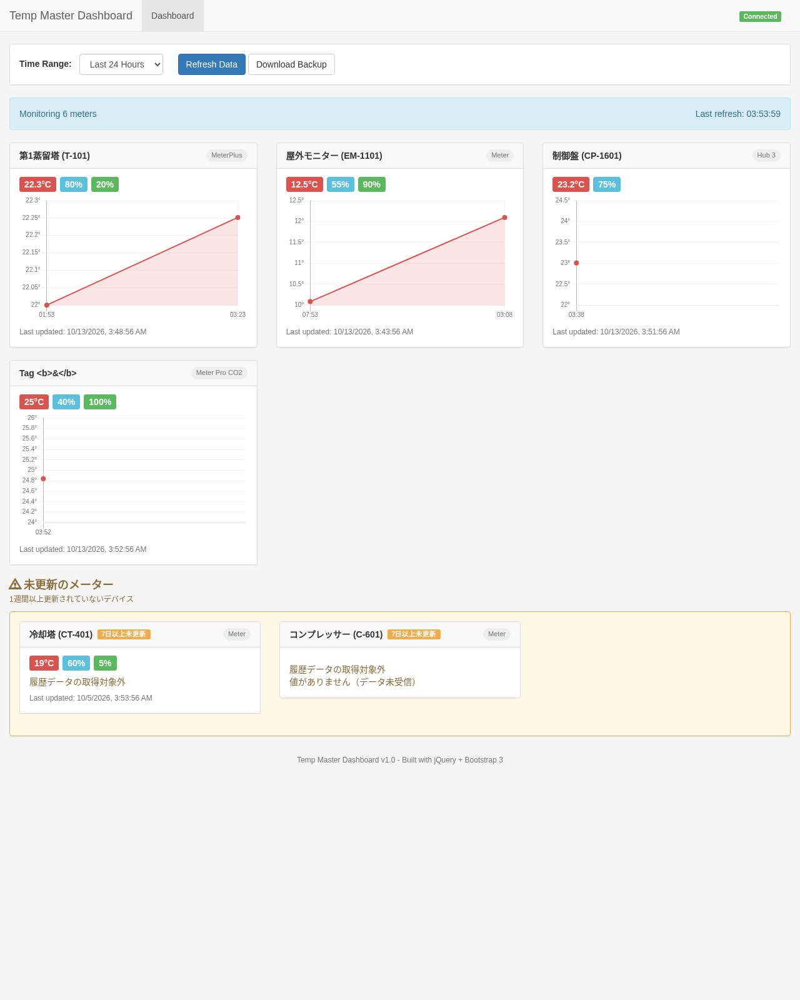
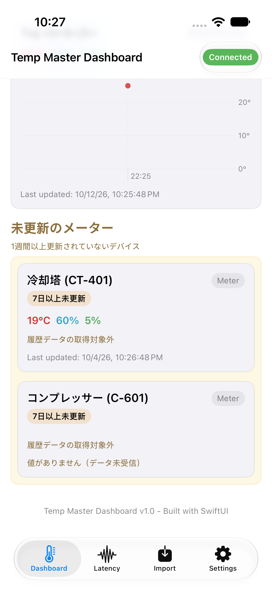
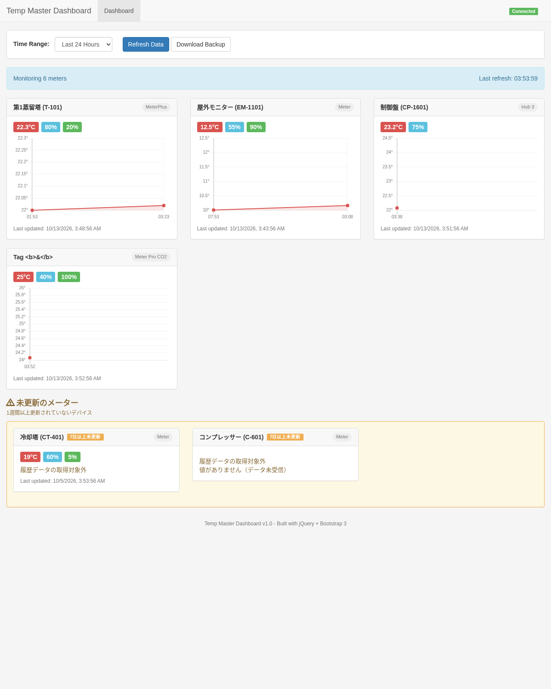
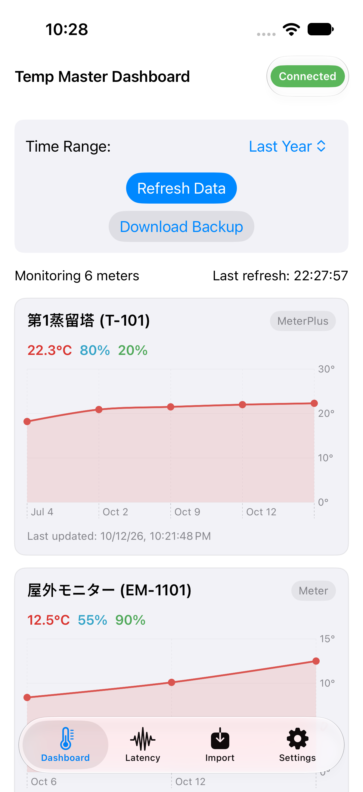
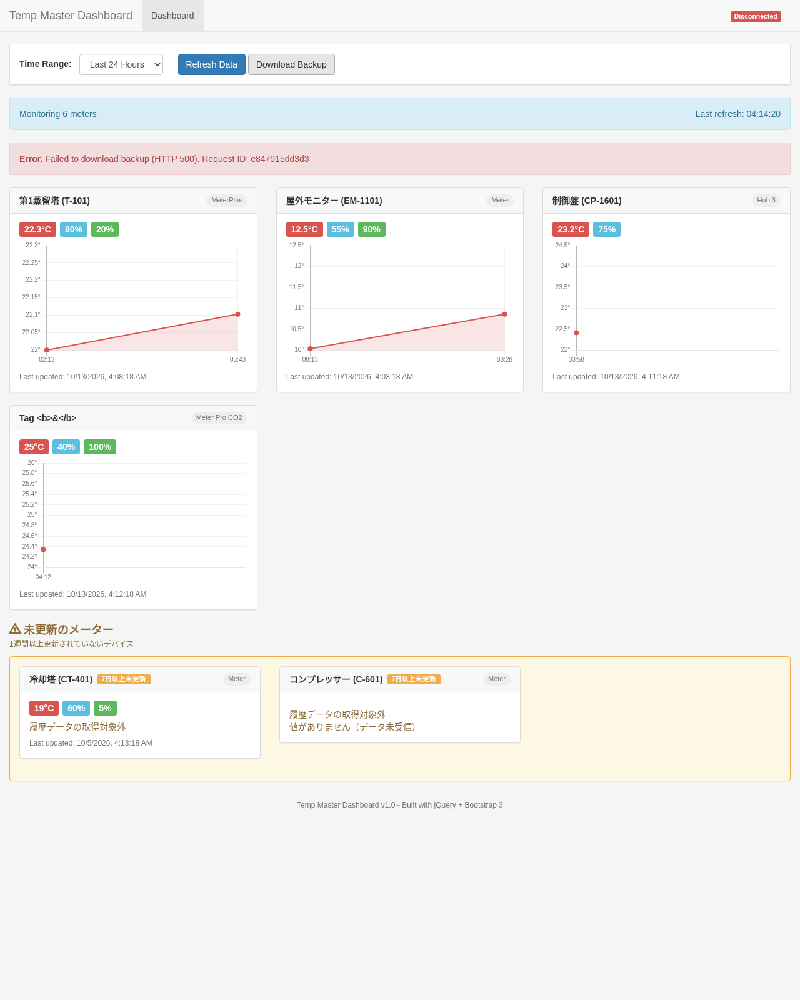
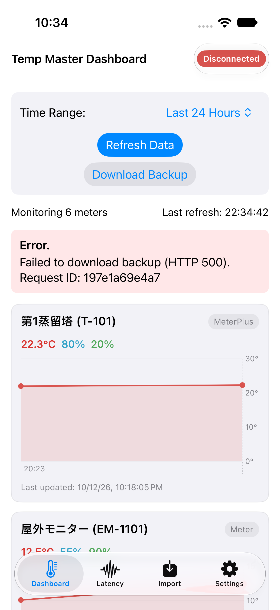

madmerger/temp-master (FastAPI + jQuery ダッシュボード) → SwiftUI iOS アプリmain b580faa (#69 表示名追加・#72 Slack アラート/バックアップ反映済み)3de578c) / iOS 実装・E2E #75 (アプリ 3df5079、E2E 成果物 95f3b7a) / 本レポート (report PR)docs/ios-migration/cases.json v2 (TC-01〜TC-24)。実測後に期待値は一切変更していない。| 項目 | 結果 |
|---|---|
| E2E 比較 (24 ケース) | MATCH 19 / iOS のみ PASS 3 / 仕様どおりの差分 1 / レガシーのみ 1 / 不一致 0 |
| レガシー実測 (21 ケース) | 21 PASS |
| iOS E2E (24 ケース) | 22 PASS / 1 FAIL (TC-18、仕様どおりの差分) / 1 N/A (TC-23) |
| iOS ユニット / UI テスト | 42 / 42、8 / 8 PASS (xcodebuild test) |
| ローカライズキー検証 | PASS (en 91 / ja 91 キー一致) |
| バックエンドテスト | 106 passed (pytest) |
| CI / Devin Review | #74 全 green。#75 の指摘は修正済み、または判断理由をスレッドに返信済み |
| 区分 | 環境 |
|---|---|
| レガシー | Ubuntu、Python 3.12 + Poetry、FastAPI (uvicorn app.main:app)、Playwright Chromium で旧画面 index.html を実測 |
| iOS | macOS、Xcode 26.6 (17F113)、iPhone 17 Simulator / iOS 27.0 (24A434)、XCUITest |
| 共通フィクスチャ | harness/reset_and_seed.sh で SEED-D1〜D7 を投入、results/import_extra.json で TC-16 |
| 実機・本番 | TC-18 / TC-24 は実際の SwitchBot Cloud API、TC-20 は本番 snakeroom.fly.dev に GET のみ |
判定の意味: - MATCH: レガシーと iOS の両方が、同じ凍結期待値に PASS - IOS_ONLY_PASS: iOS 専用ケース (Mock / Standalone) が PASS - KNOWN_DIFF: spec.md「既知の仕様差」に当たる差分 - LEGACY_ONLY: サーバー側だけの機能
| Case | 名前 | レガシー | iOS | 判定 |
|---|---|---|---|---|
| TC-01 | 起動時ダッシュボード表示 | PASS | PASS | MATCH |
| TC-02 | アクティブメーターカード (表示名変換あり) | PASS | PASS | MATCH |
| TC-03 | #69 追加の表示名変換・バッテリー null | PASS | PASS | MATCH |
| TC-04 | 表示名マッピング無し・特殊文字を含むデバイス名のエスケープ | PASS | PASS | MATCH |
| TC-05 | 未更新メーターセクション | PASS | PASS | MATCH |
| TC-06 | データ未受信の未更新メーター | PASS | PASS | MATCH |
| TC-07 | 値ありの未更新メーター (数値表記) | PASS | PASS | MATCH |
| TC-08 | Time Range 選択肢と初期値 | PASS | PASS | MATCH |
| TC-09 | Time Range 切替でのグラフ点数とラベル書式 (SEED-D1) | PASS | PASS | MATCH |
| TC-10 | Refresh Data (バックエンド未設定クレデンシャル) | PASS | PASS | MATCH |
| TC-11 | バックエンド停止時のエラー表示 | PASS | PASS | MATCH |
| TC-12 | レート制限警告表示 | - | PASS | IOS_ONLY_PASS |
| TC-13 | Download Backup | PASS | PASS | MATCH |
| TC-14 | レイテンシ統計 | PASS | PASS | MATCH |
| TC-15 | レイテンシログ一覧とフィルタ | PASS | PASS | MATCH |
| TC-16 | データインポート | PASS | PASS | MATCH |
| TC-17 | ヘルスチェック・ステータス | PASS | PASS | MATCH |
| TC-18 | Standalone: SwitchBot 実機からの収集 | PASS | FAIL | KNOWN_DIFF |
| TC-19 | 30秒自動更新 | PASS | PASS | MATCH |
| TC-20 | 本番 snakeroom への Remote 接続 (読み取りのみ) | PASS | PASS | MATCH |
| TC-21 | 日本語ローカライズ | - | PASS | IOS_ONLY_PASS |
| TC-22 | Download Backup 失敗時の Request ID 表示 | PASS | PASS | MATCH |
| TC-23 | 5xx 時 Slack アラート (サーバー側) | PASS | - | LEGACY_ONLY |
| TC-24 | Standalone: 端末内バックアップ | - | PASS | IOS_ONLY_PASS |
compare.py で両方の実測値を突き合わせ、次の 2 点を確認しました。B0E9FE83F0D4, B0E9FEB9CFA6, B0E9FED60DD2) は、すべて種別 Hub 3。Hub 3 種別のデバイスがあります。そのため spec.md「既知の仕様差」では、iOS Standalone の収集対象を「バックエンドの METER_DEVICE_TYPES + Hub 3」と定めています。Monitoring 21 meters。SwitchBotClient.supportedDeviceTypes から Hub 3 を除けば一致します。tests/test_error_alerts.py とバックエンドテスト全件で PASS しています。| 台帳 ID | 内容 | ケース (判定) |
|---|---|---|
| L-01 | <title> / navbar brand |
TC-01(MATCH) |
| L-02 | 接続ステータスバッジ #connection-status |
TC-01(MATCH) |
| L-03 | Time Range セレクト | TC-08(MATCH) |
| L-04 | ボタン | TC-10(MATCH), TC-13(MATCH), TC-22(MATCH) |
| L-05 | レート制限警告 #rate-limit-warning |
TC-12(IOS_ONLY_PASS) |
| L-06 | ステータスバー #status-bar |
TC-01(MATCH) |
| L-07 | ローディング / エラー | TC-11(MATCH), TC-22(MATCH) |
| L-08 | メーターカード | TC-02(MATCH) |
| L-09 | 未更新セクション | TC-05(MATCH), TC-06(MATCH), TC-07(MATCH) |
| L-10 | 温度グラフ | TC-09(MATCH) |
| L-11 | (移行元 UI なし・API のみ) /api/latency-logs, /api/latency-stats |
TC-14(MATCH), TC-15(MATCH) |
| L-12 | (移行元 UI なし・API のみ) /api/import |
TC-16(MATCH) |
| L-13 | (移行元 UI なし・API のみ) /healthz, /api/status |
TC-17(MATCH) |
| L-14 | フッター | 未カバー (ユニットテスト側で確認) |
| B-01 | 表示名変換 DISPLAY_NAMES (23 件。#69 で Study Hub→制御盤 (CP-1601), Livingroom Hub… |
TC-02(MATCH), TC-03(MATCH), TC-04(MATCH) |
| B-02 | 未更新判定: last_updated が null / 不正 / 現在から 7 日 (604,800,000ms) 以上 前なら未更新。未更新は… |
TC-05(MATCH), TC-06(MATCH) |
| B-03 | 数値表記は JavaScript の Number→文字列と同等 (19.0 → 19, 22.3 → 22.3)。null の値はラベル非表示 |
TC-02(MATCH), TC-03(MATCH), TC-07(MATCH) |
| B-04 | 期間→取得範囲: hour 3600s / day 86400s / week 604800s / month 2592000s / year 3153600… | TC-08(MATCH), TC-09(MATCH) |
| B-05 | X軸ラベル書式 (端末ローカル時刻): hour/day HH:mm、week Ddd HH、month/year Mon D |
TC-09(MATCH) |
| B-06 | 自動更新 30 秒 (meters → status の順に取得し、成功時エラー非表示・Connected) | TC-01(MATCH), TC-19(MATCH) |
| B-07 | Refresh: POST /api/meters/refresh → 失敗時 Failed to refresh: <err> 表示 → 続けて再取… |
TC-10(MATCH) |
| B-08 | 取得失敗: Failed to fetch meters: ... / Failed to fetch status: ...、Disconnected |
TC-11(MATCH) |
| B-09 | レート制限: 429 受信で consecutive_errors++、待機 min(60 * 2^errors, 600) 秒。待機中は API を… |
TC-12(IOS_ONLY_PASS) |
| B-10 | バックアップ: DB の一貫したスナップショット (SQLite Online Backup API) を `BACKUP_DIR/switchbot_bac… | TC-13(MATCH), TC-22(MATCH), TC-24(IOS_ONLY_PASS) |
| B-11 | レイテンシ統計: total / avg / min / max / success / failed / success_rate(%)、期間フィルタ (s… | TC-14(MATCH) |
| B-12 | レイテンシログ: start/end/endpoint/device_id フィルタ、新しい順、limit (既定 100) | TC-15(MATCH) |
| B-13 | インポート: devices を upsert、readings を追加。Z 付き ISO 日時を受理。件数を返す |
TC-16(MATCH) |
| B-14 | ステータス: configured / meters_count / is_rate_limited / backoff_remaining / last_a… | TC-17(MATCH) |
| B-15 | SwitchBot 署名: sign = Base64(HMAC-SHA256(secret, token + t + nonce))、ヘッダ Autho… |
TC-18(KNOWN_DIFF) |
| B-16 | 対象デバイス種別: Meter, MeterPlus, WoIOSensor, Meter Plus (JP), Meter Pro, Meter Pro C… | TC-18(KNOWN_DIFF) |
| B-17 | 収集: デバイス一覧→各ステータス取得→temperature がある場合のみ現在値更新 + reading 保存 (humidity null→0)。全 A… | TC-18(KNOWN_DIFF) |
| B-18 | データ取得先: 現行フロントは https://snakeroom.fly.dev。iOS は既定値を同 URL とし設定で変更可 |
TC-20(MATCH) |
| B-19 | 全レスポンスに X-Request-ID (12 桁 hex) を付与。未処理例外は `500 {"detail":"Internal Server Er… |
TC-13(MATCH), TC-22(MATCH) |
| B-20 | /api/* の 5xx で Slack (SLACK_BOT_TOKEN / SLACK_ONCALL_ALERTS_CHANNEL_ID) に… |
TC-23(LEGACY_ONLY) |
| V-01 | 移行元は HTML エスケープでデバイス名等を表示 | TC-04(MATCH) |
| V-02 | (新規) ローカライズ | TC-21(IOS_ONLY_PASS) |
| V-03 | (新規) クレデンシャル保管 | 未カバー (ユニットテスト側で確認) |
| V-04 | (新規) 通信 | 未カバー (ユニットテスト側で確認) |
| V-05 | (新規) インポート入力検証 | 未カバー (ユニットテスト側で確認) |
| V-06 | (新規) サーバー運用機能の扱い | TC-23(LEGACY_ONLY) |
E2E でカバーしていない台帳行の確認方法:
| 台帳 ID | 確認方法 |
|---|---|
| L-14 フッター | Localizable.strings の footer = Temp Master Dashboard v1.0 - Built with SwiftUI をコードで確認 (技術名だけを変えた意図的な差分)。画面は TC-01 のスクリーンショットで確認 |
| V-03 クレデンシャル保管 | Keychain 保存 (KeychainStore)、入力欄は SecureField。コードレビューで確認。ユニットテストは testMockSettingsDoNotTouchKeychain のみ |
| V-04 通信 | AppInfoPlistTests.testLaunchLocalizationAndScopedATSConfiguration (ATS 例外が localhost / 127.0.0.1 のみ) |
| V-05 インポート入力検証 | RemoteMeterServiceTests.testImportRejectsInvalidPayloadWithoutSendingRequest と SQLite のトランザクション実装 |








e2e_host.py の /reset と /stop-backend に認証がない。127.0.0.1 だけで待ち受け、テスト実行中にだけ動くものです。docs/ios-migration/ledger.md / spec.md / cases.json: 台帳・仕様・凍結済み期待値docs/ios-migration/results/legacy.json, legacy_screens/: レガシーの実測結果docs/ios-migration/results/ios/ios.json, ios_screens/, ios_summary.md: iOS E2E の実測結果 (#75 95f3b7a から転記)docs/ios-migration/report/compare.py: 比較スクリプト。comparison.json / comparison.md (キー別の詳細) / traceability.md を生成する